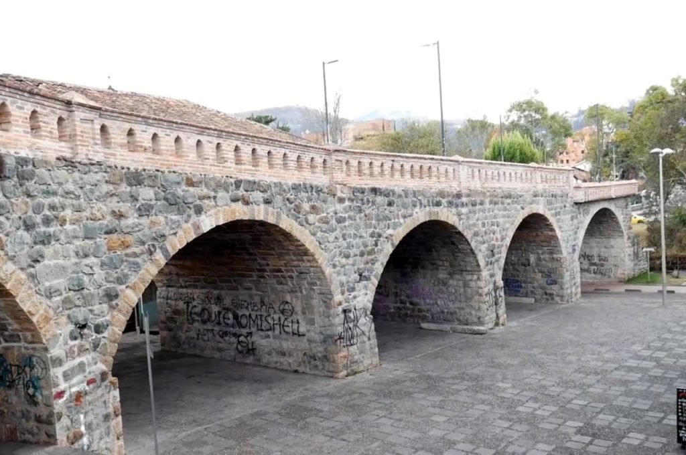

Cuenca sus Lugares
Cuenca es admirada por sus lugares turísticos ricos en paisajes, aquí encontraremos algunos lugares seleccionados para que usted pueda conocer una pequeña parte de cuenca, los lugares que mencionaremos no son únicos existe distintos lugares para hacer turismo, esto no quiere decir que estos lugares nombrados son los mas importantes, estos lugares forman parte de todas las areas de interés en cuenca.

Río Tomebamba
Cuenca fue fundada por el español Gil Ramírez Dávalos, el 12 de Abril de 1557. Santa Ana de los Ríos de Cuenca, se asienta en el valle cañari de Guapondélig que significa campo florido.
